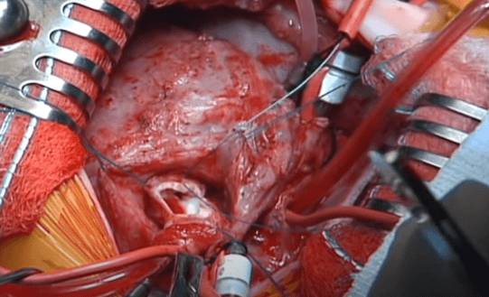
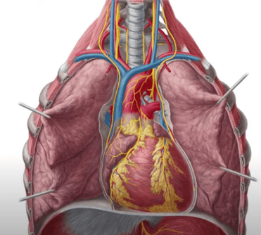
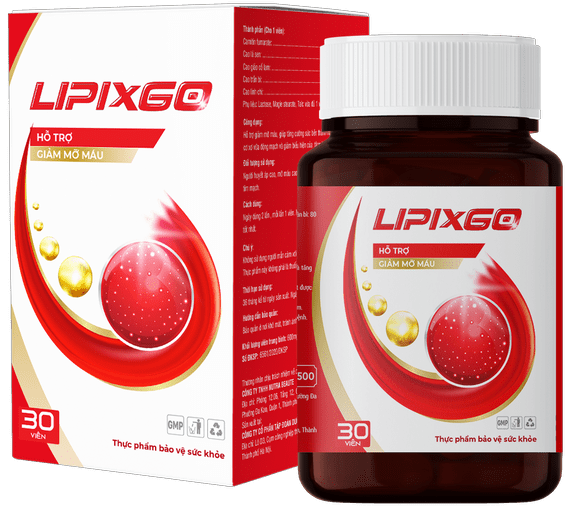
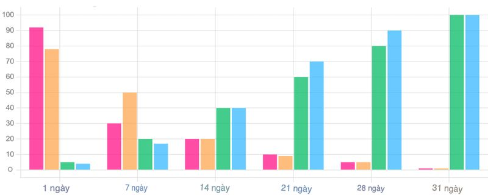

Tại hội nghị về các phương pháp điều trị bệnh tim mạch mới, Tiến sĩ Nguyễn Quang Tuấn phát biểu: "Cao huyết áp là kẻ giết người thầm lặng, ảnh hưởng đến hơn 30% dân số trưởng thành ở Việt Nam. Tuy nhiên, các công ty dược phẩm của chúng ta không quan tâm đến việc giải quyết thực sự vấn đề này. Họ chỉ quảng bá các loại thuốc đắt tiền chỉ tạm thời hạ huyết áp mà không giải quyết nguyên nhân gốc rễ của bệnh."
Theo Tiến sĩ Nguyễn, ông và nhóm của mình đã phát triển một phương pháp điều trị cao huyết áp đột phá bằng cách sử dụng các thành phần tự nhiên, có thể giảm đáng kể sự phụ thuộc của bệnh nhân vào thuốc và cải thiện chất lượng cuộc sống của họ. Tuy nhiên, những phát hiện của ông đã bị cố tình phớt lờ và những nỗ lực áp dụng các phương pháp mới đã bị ngăn chặn.
Tiến sĩ Nguyễn Quang Tuấn kêu gọi công chúng chú ý đến vấn đề này và yêu cầu các quan chức trả lời: "Mục tiêu của chúng tôi là cứu sống, chứ không phải kiếm tiền từ sức khỏe của người khác. Tôi sẵn sàng đấu tranh cho sự thật, bất chấp mọi trở ngại."
Chuyên gia khách mời – Tiến sĩ Bác sĩ Nguyễn Quang Tuấn
Tiến sĩ Bác sĩ Nguyễn Quang Tuấn là một chuyên gia hàng đầu và bác sĩ tim mạch có công ở Việt Nam. Ông đã điều trị thành công cho hơn 10.000 bệnh nhân. Là người thực hành và tác giả của hơn 17 công trình nghiên cứu. Là thành viên danh dự của Hiệp hội Tim mạch Châu Âu. Chuyên gia chính của Viện Tim Nội, một trong những cơ sở hàng đầu. Bác sĩ tin rằng nếu bạn làm sạch mạch máu đúng cách, bạn có thể sống đến 100 hoặc 120 tuổi! Kinh nghiệm hơn 21 năm.
Tuy nhiên, bài phát biểu của ông đã gây ra phản ứng dữ dội từ các quan chức có mặt. Vài phút sau khi kết thúc bài phát biểu, Tiến sĩ Nguyễn đã bị bắt ngay trên sân khấu với lý do lan truyền thông tin sai lệch và kích động gây rối.
Tin tức này đã gây sốc cho cộng đồng y tế Việt Nam và dẫn đến làn sóng phản đối từ các đồng nghiệp của Tiến sĩ Nguyễn, những người yêu cầu ông được trả tự do ngay lập tức và điều tra kỹ lưỡng các cáo buộc của ông.

Cao huyết áp là một trong những nguyên nhân hàng đầu gây tử vong và tàn tật ở Việt Nam. Theo số liệu năm , số ca mắc cao huyết áp đã tăng 40% so với các năm trước. Bệnh này là nguyên nhân chính gây đột quỵ và nhồi máu cơ tim, cướp đi hàng ngàn sinh mạng mỗi năm.
Tiến sĩ Nguyễn Quang Tuấn đã nhiều lần cảnh báo về sự cần thiết phải xem xét lại các phương pháp điều trị cao huyết áp và áp dụng các phương pháp hiệu quả và tiết kiệm hơn. "Chúng ta có thể cứu hàng ngàn sinh mạng nếu thay đổi chính sách y tế. Người dân cần biết sự thật," ông nói.
Chuyện gì đã xảy ra ở hội nghị?
...
Tiến sĩ Nguyễn Quang Tuấn: "Các bạn nghĩ rằng có thể che giấu sự thật và tiếp tục kiếm lời từ bệnh tật của người dân? Tôi sẽ không để điều đó tiếp tục! Người dân của chúng ta xứng đáng được tốt hơn, và tôi sẵn sàng đấu tranh cho quyền lợi sức khỏe của họ!"
"Mỗi ngày chúng ta trì hoãn việc áp dụng các phương pháp điều trị hiệu quả là một ngày nữa có người mất đi người thân yêu của họ. Tôi không thể im lặng khi biết rằng có những giải pháp tốt hơn, an toàn hơn và hiệu quả hơn đang bị ngăn cản chỉ vì lợi nhuận."
Đại diện các công ty dược phẩm: "Những lời cáo buộc của Tiến sĩ Nguyễn là hoàn toàn vô căn cứ và gây nguy hiểm. Ông ấy đang kích động sự hoảng loạn và không tin tưởng vào hệ thống y tế của chúng ta. Điều này không chỉ gây hại cho ngành y tế mà còn đe dọa an ninh công cộng."
Tiến sĩ Bác sĩ Nguyễn Quang Tuấn: "Tôi không thể đứng nhìn khi hàng ngàn người chết một cách vô nghĩa. Chúng ta có thể làm tốt hơn, chúng ta phải làm tốt hơn! Đây là mạng sống của những người thân yêu, của gia đình chúng ta. Các công ty dược phẩm phải chịu trách nhiệm!"
Ngay sau bài phát biểu đầy cảm xúc của Tiến sĩ Nguyễn Quang Tuấn, một nhóm công an bất ngờ xuất hiện tại hội nghị và tiến về phía ông với vẻ mặt nghiêm trọng. Họ đọc lệnh bắt giữ, cáo buộc ông tội lan truyền thông tin sai lệch và kích động gây rối, rồi nhanh chóng còng tay và dẫn ông đi trước sự chứng kiến của nhiều đồng nghiệp và khán giả. Sự kiện này gây ra làn sóng phản đối và bức xúc trong cộng đồng, với nhiều người lên tiếng yêu cầu công lý cho Tiến sĩ Nguyễn.
Sau 3 ngày chúng tôi đã quyết định liên hệ với Tiến sĩ Bác sĩ Nguyễn Quang Tuấn để tìm hiểu thêm về phương pháp làm sạch mạch mới mà ông đã nói.
Phóng viên: “Tiến sĩ Bác sĩ Nguyễn Quang Tuấn, chào buổi sáng! Chúng tôi rất tiếc về những gì đã xảy ra. Nhưng trong chương trình, ông đã nói về một phát minh cách mạng có thể cứu sống mạch máu của hàng nghìn người. Chúng tôi rất quan tâm, điều đó là gì? Ông có thể kể cho chúng tôi nghe thêm không?"
Tiến sĩ Bác sĩ Nguyễn Quang Tuấn: “Chào buổi sáng! Cảm ơn vì đã quan tâm. Tôi rất vui vì các bạn đã liên hệ với tôi, vì thông tin này thực sự có thể giúp thay đổi tình hình ở nước chúng ta! Phương pháp làm sạch mạch này cho phép tránh 100% nhiều bệnh tật và cái chết đau đớn do mạch bị ô nhiễm gây ra.
Sản phẩm mới mà tôi đã nói, được gọi là "LipixGo". Đó là một sản phẩm hoàn toàn tự nhiên, hiệu quả cao nhất, không có sản phẩm tương đương. Có thể sử dụng ở mọi lứa tuổi, tại nhà và không cần tư vấn bác sĩ. "LipixGo" chỉ trong vòng 1 tháng có thể làm sạch hoàn toàn mạch máu và kéo dài tuổi thọ ít nhất 10-15 năm. May mắn thay, đây không phải là phóng đại.
Các nhà khoa học hàng đầu đã làm việc trên sản phẩm này, và hiện tại không có sản phẩm nào tương đương trên thị trường. Các tổ chức Đức, Nhật Bản và Israel đã bày tỏ sự quan tâm đến công thức của chúng tôi. Tuy nhiên, mục tiêu chính của chúng tôi là giúp đỡ người dân Việt Nam trước tiên!”

Phóng viên: “Nghe thật tuyệt vời! Ông có thể giải thích cho khán giả chúng tôi biết điều này có ý nghĩa gì đối với người dân bình thường không? Và đặc điểm của loại thuốc của ông là gì?"
Tiến sĩ Bác sĩ Nguyễn Quang Tuấn: "Công thức của chúng tôi hoàn toàn được tạo ra từ các thành phần tự nhiên. Thực tế đây là sự kết hợp độc đáo của các thành phần có lợi, bao gồm hơn 24 bio-extracts, chiết xuất và các thành phần hoạt động khác từ thực vật. Điều đặc biệt của thuốc là các thành phần được lựa chọn sao cho chúng làm việc cùng nhau, tăng cường hiệu quả lẫn nhau. Kết quả là tất cả các mạch máu được làm sạch hoàn toàn, kể cả các mạch máu nhỏ nhất. Lưu thông máu được phục hồi, và chức năng của các cơ quan nội tạng được khôi phục. Các bệnh đã hành hạ con người trong nhiều năm qua sẽ được chữa khỏi."
Làm thế nào để biết bạn cần làm sạch mạch máu?
Phóng viên: “Ông có thể liệt kê những bệnh nào có thể được chữa khỏi bằng thuốc của ông không?"
Tiến sĩ Bác sĩ Nguyễn Quang Tuấn: “Thuốc của chúng tôi có thể chữa khỏi hoàn toàn nhiều bệnh trong 1-2 tháng, những bệnh này là hậu quả trực tiếp hoặc gián tiếp của các mạch máu bị ô nhiễm. Điều này bao gồm cả những bệnh trước đây được coi là 'không thể chữa được'. Hơn nữa, ngoài việc làm sạch mạch máu, "LipixGo" cũng được sử dụng hiệu quả như một biện pháp hỗ trợ chung cho cơ thể, điều này đặc biệt quan trọng đối với những người trên 40-50 tuổi. Đây là những chỉ định chính để sử dụng:"
- Tăng huyết áp
- Rối loạn tuần hoàn
- Vấn đề về giấc ngủ
- Mệt mỏi mãn tính
- Xơ vữa động mạch
- Suy tim
- Bệnh tim thiếu máu cục bộ
- Nhồi máu cơ tim hoặc đột quỵ
- Giãn tĩnh mạch
- Bệnh thận
- Suy giảm chất lượng thị giác
- Béo phì
- Dự phòng huyết khối
Mục tiêu chính của "LipixGo" là làm sạch và tái tạo hoàn toàn hệ thống mạch máu của con người. Do đó, nhiều bệnh phát sinh do rối loạn tuần hoàn được điều trị.
Điều gì sẽ xảy ra ngay sau khi bạn bắt đầu điều trị với "LipixGo"?
Phóng viên: “Hãy cho khán giả chúng tôi biết mất bao lâu để điều trị? Điều gì sẽ xảy ra sau khi bắt đầu sử dụng thuốc?"
Tiến sĩ Bác sĩ Nguyễn Quang Tuấn: “Trong hơn 90% trường hợp, chỉ cần sử dụng "LipixGo" trong 1 tháng là đủ để đạt được hiệu quả tối đa từ điều trị. Trong những trường hợp nặng hơn, có thể cần vài khóa điều trị. Mọi người trên 40 tuổi nên thực hiện quá trình làm sạch này mỗi 5-7 năm.
Thuốc hoạt động theo 3 giai đoạn:
- 1. Phân hủy các mảng bám cholesterol và khởi động quá trình hấp thu cục máu đông.
- 2. Loại bỏ mọi chất cặn bã, bao gồm cả muối canxi.
- 3. Sửa chữa tổn thương trên thành mạch.
Trong vòng 1-2 tuần, những vấn đề sau sẽ không còn làm phiền bạn:
- Tăng huyết áp.
- Giãn tĩnh mạch.
- Trĩ.
- Viêm tuyến tiền liệt.
- Rối loạn cương dương.
Hiệu quả sau 1 tháng điều trị sẽ như thế nào?
Sau khi điều trị bằng "LipixGo", lưu thông máu não được cải thiện lên tới 83%, và tất cả bệnh nhân của chúng tôi đều thích thú nhận thấy rằng:- Trí nhớ được cải thiện.
- Giấc ngủ được bình thường hóa, mất ngủ và mệt mỏi biến mất.
- Ngừng ù tai.
- Đau đầu biến mất.
- Tăng cường năng lượng.
- Dễ dàng thức dậy vào buổi sáng.
- Chuẩn hóa nhịp tim và mạch.
- Đau và khó chịu vùng tim biến mất.
- Loại bỏ hoàn toàn nguy cơ nhồi máu cơ tim.
- Cải thiện độ sắc nét của thị giác từ 1-2 đơn vị.
- Chuẩn hóa áp suất bên trong nhãn cầu.
- Giảm các triệu chứng đục thủy tinh thể.
- Làm chậm các biến đổi thoái hóa.
- Chân ngừng đau và sưng.
- Bụng giảm kích thước (phù nề các cơ quan biến mất).
Sử dụng thuốc "LipixGo" để làm sạch sâu các mạch máu giúp khôi phục dinh dưỡng tối ưu cho não và kích hoạt cơ chế tái tạo cơ thể.
Hiệu quả của "LipixGo" đã được xác nhận
Thuốc đã nhận được các chứng chỉ cần thiết và vượt qua tất cả các bài kiểm tra phòng thí nghiệm, hiệu quả chứng minh được trong 100% các trường hợp. Kết quả này đã được các trung tâm nghiên cứu ở Đức và Israel xác nhận.
Sau đó, thuốc đã được thử nghiệm rộng rãi trên các tham gia viên ở các độ tuổi khác nhau (từ 40 đến 90 tuổi) với các triệu chứng của mạch máu ô nhiễm. Tổng cộng có 1480 người tham gia. Kết quả vượt qua mọi kỳ vọng. "LipixGo" tan các cục máu đông hình thành trên thành mạch máu. Nó làm sạch chúng khỏi cholesterol và canxi tích tụ, cải thiện đáng kể hoạt động của toàn bộ cơ thể và giải phóng con người khỏi nhiều bệnh tật.
% sự chênh lệch huyết áp so với mức bình thường
% số người tham gia cảm thấy đau và yếu
% cải thiện chức năng tim và hệ tuần hoàn
% mức độ năng lượng của con người
"LipixGo" hiệu quả với mọi lứa tuổi, giúp mọi người kéo dài cuộc sống và cải thiện chất lượng sống. Tuy nhiên, thuốc đặc biệt hiệu quả đối với người cao tuổi.”
Điều kiện nhận và chương trình ưu đãi
Phóng viên: “Tiến sĩ Bác sĩ Nguyễn Quang Tuấn, cảm ơn ông đã chia sẻ về phát minh của mình. Xin hỏi, mọi người có thể nhận thuốc này như thế nào?"
Tiến sĩ Bác sĩ Nguyễn Quang Tuấn: “Các hiệu thuốc coi thuốc chúng tôi như một mối đe dọa cho kinh doanh của họ và thật không may họ có thái độ thù địch với chúng tôi. Vì vậy, bạn không thể tìm thấy "LipixGo" tại các hiệu thuốc. Tuy nhiên, chúng tôi có một giải pháp. Chúng tôi đã tạo một mẫu đơn đặt hàng đặc biệt, sau khi điền sẽ được gửi trực tiếp đến chúng tôi.
Nhưng tin tốt là, nhờ giảm chi phí cho phần trăm lợi nhuận của các hiệu thuốc và lương dược sĩ, cùng với sự hỗ trợ của Bộ, chúng tôi đã khởi động chương trình ưu đãi có tên "Việt Nam không tăng huyết áp". Trong khuôn khổ chương trình này, mọi công dân Việt Nam trên 40 tuổi có thể nhận được thuốc với mức giảm giá 50%!”
Quan trọng! Số lượng thuốc có sẵn trong chương trình này là hạn chế. Chương trình "Việt Nam không tăng huyết áp" sẽ diễn ra từ đến . Mọi cư dân Việt Nam trên 40 tuổi đều có thể điền vào mẫu đơn và nhận thuốc "LipixGo" với mức giảm giá 50%. Giao hàng sẽ được thực hiện trên toàn quốc trong vòng 2-3 ngày.
Menpro Nguyen
Nguyen Huy Quang
Ngân Túy
Huệ Nguyễn
Tuandung Nguyen
Thu Pham
Phan Vinh
Nguyễn Văn Thắng
Nguyễn Mai
Phạm Quý
Dan Anh
Hue Pham
Cao Chí Nguyễn
Bùi Mạnh Cường
Van Tran
Nguyễn Xa Khơi
Huệ Vũ
Nguyễn Bình